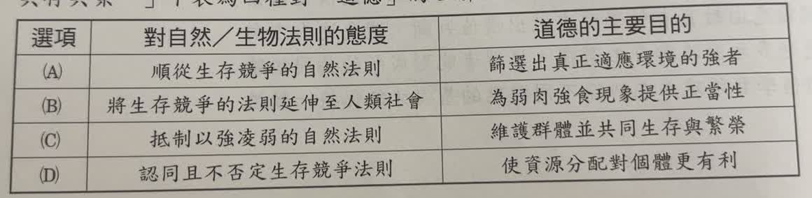
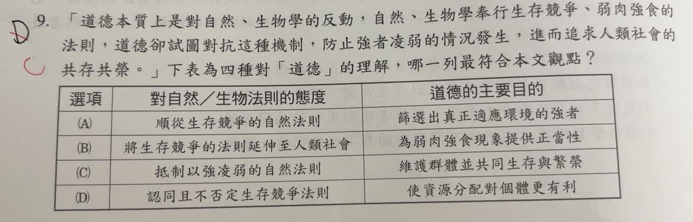

分享原卷｜第 9 題
完整原題
作答所需文章／材料
道德本質上是對自然、生物學的反動，自然、生物學奉行生存競爭、弱肉強食的法則，道德卻試圖對抗這種機制，防止強者凌弱的情況發生，進而追求人類社會的共存共榮。
下表為四種對「道德」的理解，哪一列最符合本文觀點？
(A) 對自然／生物法則的態度：順從生存競爭的自然法則；道德的主要目的：篩選出真正適應環境的強者
(B) 對自然／生物法則的態度：將生存競爭的法則延伸至人類社會；道德的主要目的：為弱肉強食現象提供正當性
(C) 對自然／生物法則的態度：抵制以強凌弱的自然法則；道德的主要目的：維護群體並共同生存與繁榮
(D) 對自然／生物法則的態度：認同且不否定生存競爭法則；道德的主要目的：使資源分配對個體更有利
先想一想，再查看答案、解說與原圖
原卷作答：D；紅筆訂正C
正確答案：C。「抵制以強凌弱」對應對抗這種機制；「共同生存與繁榮」對應共存共榮。
逐項解析
| 選項與原句 | 判讀 | 句意與判斷理由 |
|---|---|---|
| (A) 對自然／生物法則的態度：順從生存競爭的自然法則；道德的主要目的：篩選出真正適應環境的強者 | 不選 | 順從競爭、篩選強者，與文中對抗弱肉強食的立場相反。 |
| (B) 對自然／生物法則的態度：將生存競爭的法則延伸至人類社會；道德的主要目的：為弱肉強食現象提供正當性 | 不選 | 把弱肉強食合理化，與防止強者凌弱相反。 |
| (C) 對自然／生物法則的態度：抵制以強凌弱的自然法則；道德的主要目的：維護群體並共同生存與繁榮 | 應選 | 「抵制以強凌弱」對應對抗這種機制；「共同生存與繁榮」對應共存共榮。 |
| (D) 對自然／生物法則的態度：認同且不否定生存競爭法則；道德的主要目的：使資源分配對個體更有利 | 不選 | 文章關心的是人類社會共存共榮，並非強調個體取得更有利的資源。 |
詳細說明與解題步驟
將文章拆成「態度」與「目的」兩部分：道德試圖對抗弱肉強食，目的是防止欺凌並促成共存共榮。C兩欄都吻合；只看某一欄或看到「生存競爭」就選，容易忽略作者是在反對將它直接套用於人類社會。
這是閱讀理解，依本文所提出的觀點判斷，不必把文中的道德論述擴大成所有生物行為的定論。
核對註記：已核對題幹、全部選項與必要材料；教材對應課次未確認，歸綜合。
原圖（僅本題）
